Sua próxima viagem é aqui
Explore o Brasil com o conforto e segurança da TopTurismo.
Viagem Segura
Seguros inclusos e suporte em diversos destinos nacionais.
Melhor Preço
Garantimos os melhores descontos através de parcerias exclusivas.
Suporte 24h
Nossa equipe está disponível a qualquer hora para te ajudar.
Destinos
Confira os melhores destinos para sua próxima viagem.
Rio de Janeiro - RJ
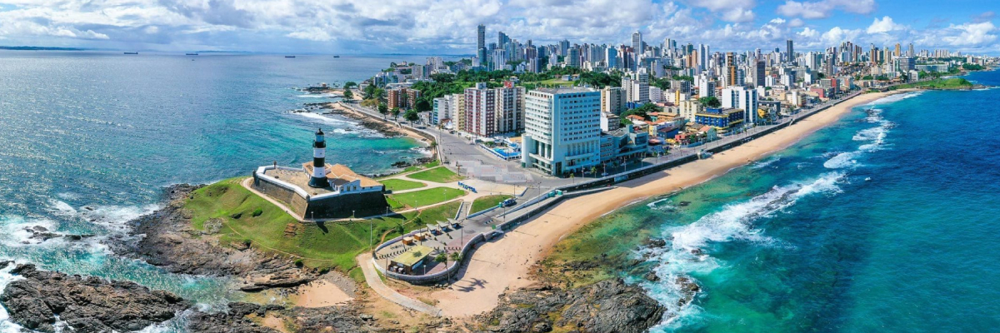
Salvador - BA
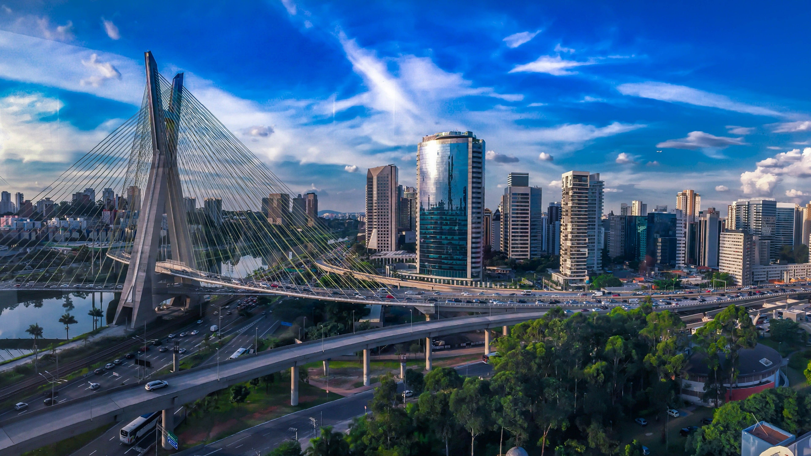
São Paulo - SP
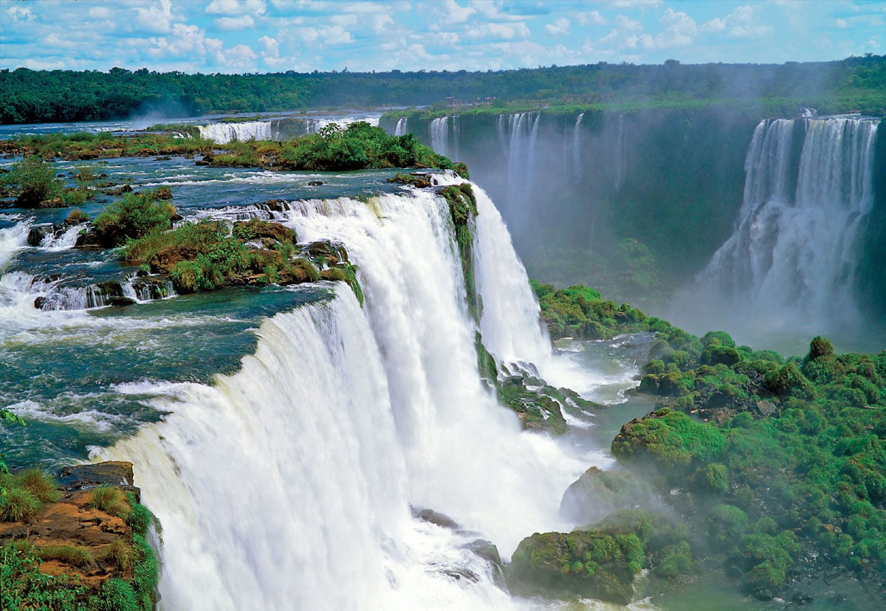
Foz do Iguaçu - PR
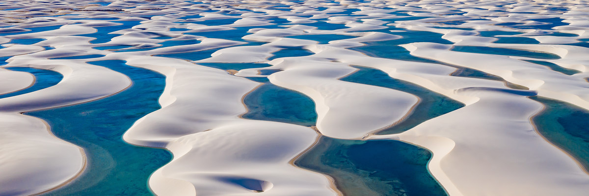
Lençois Maranhenses - MA
Manaus - AM
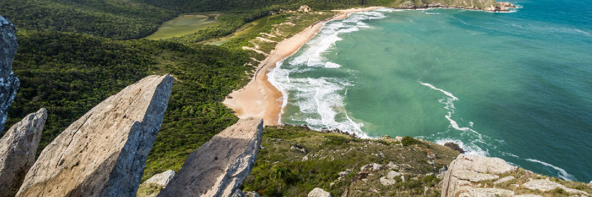
Florianópolis - SC

Gramado - RS
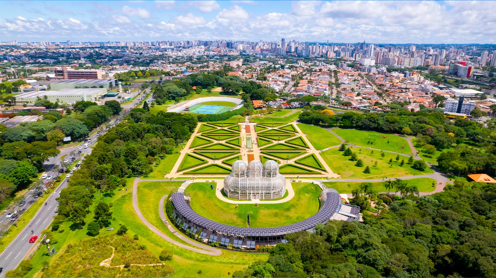
Curitiba - PR
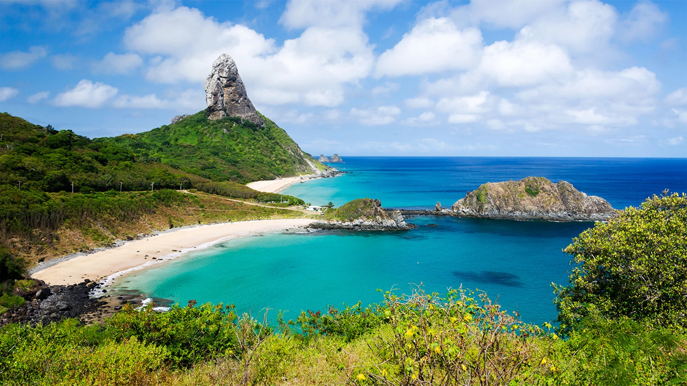
Fernando de Noronha - PE
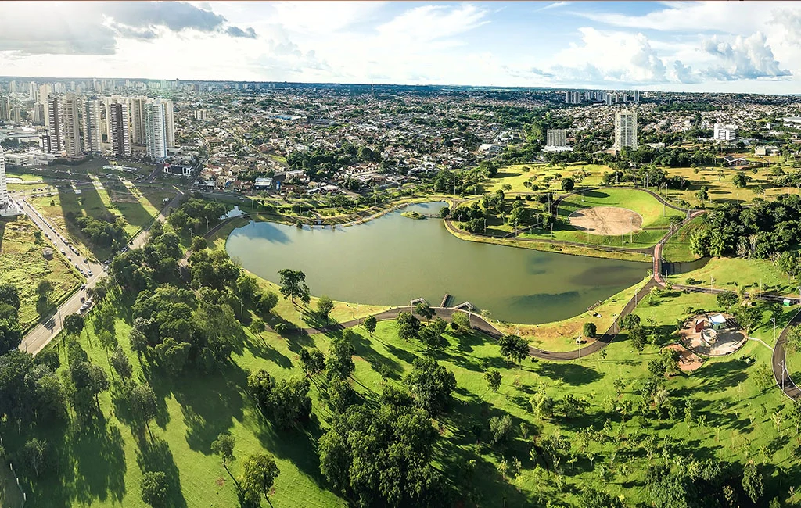
Campo Grande - MS
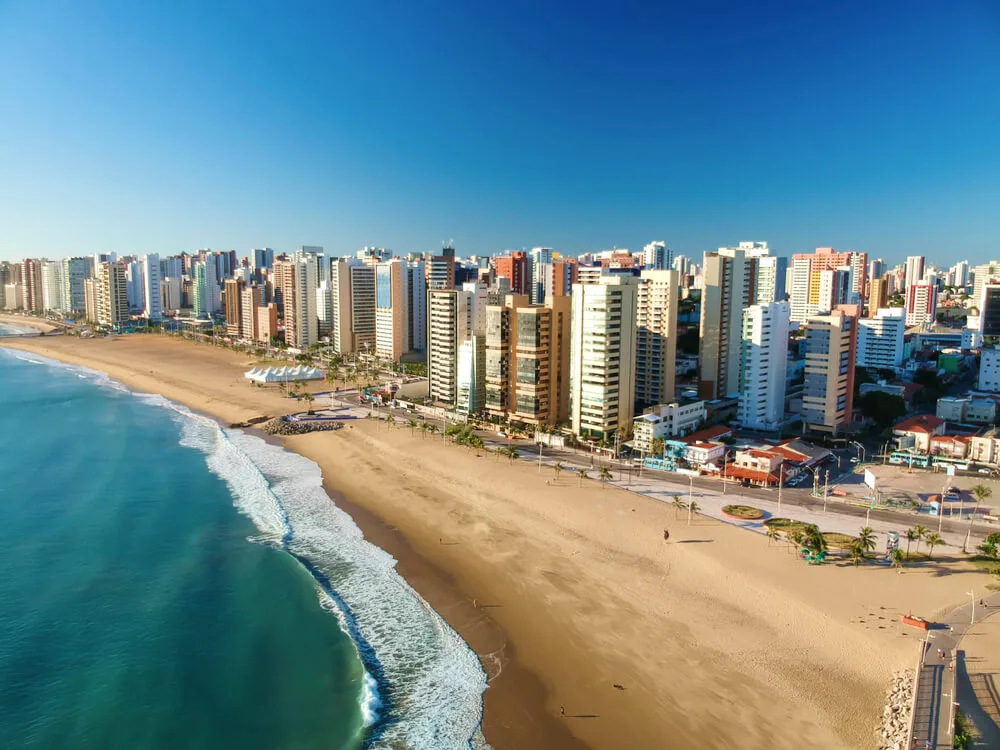
Fortaleza - CE
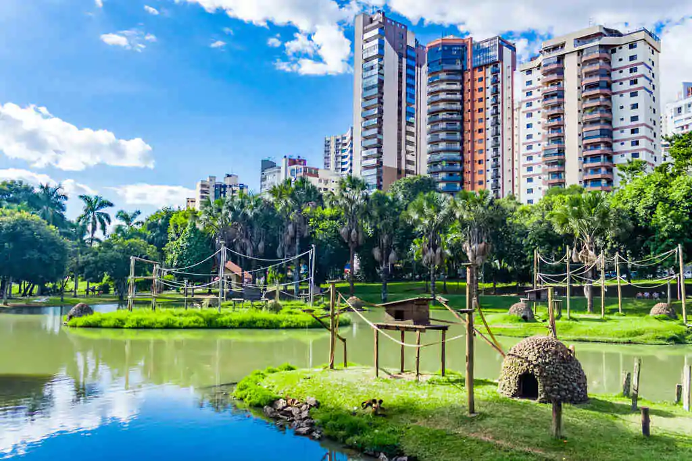
Goiânia - GO
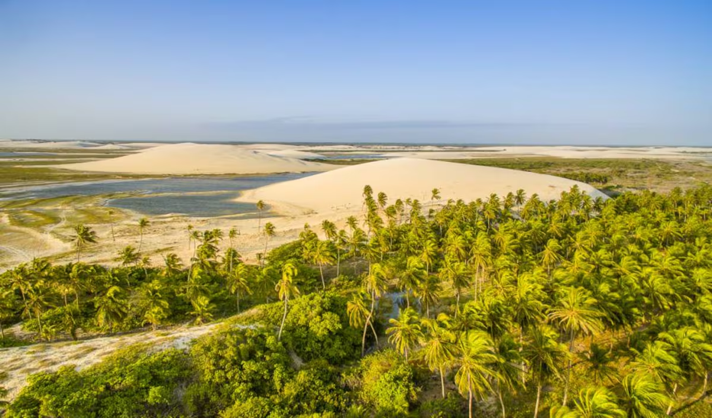
Jericoacoara - CE
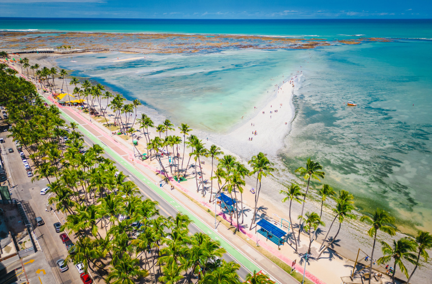
Maceió - AL
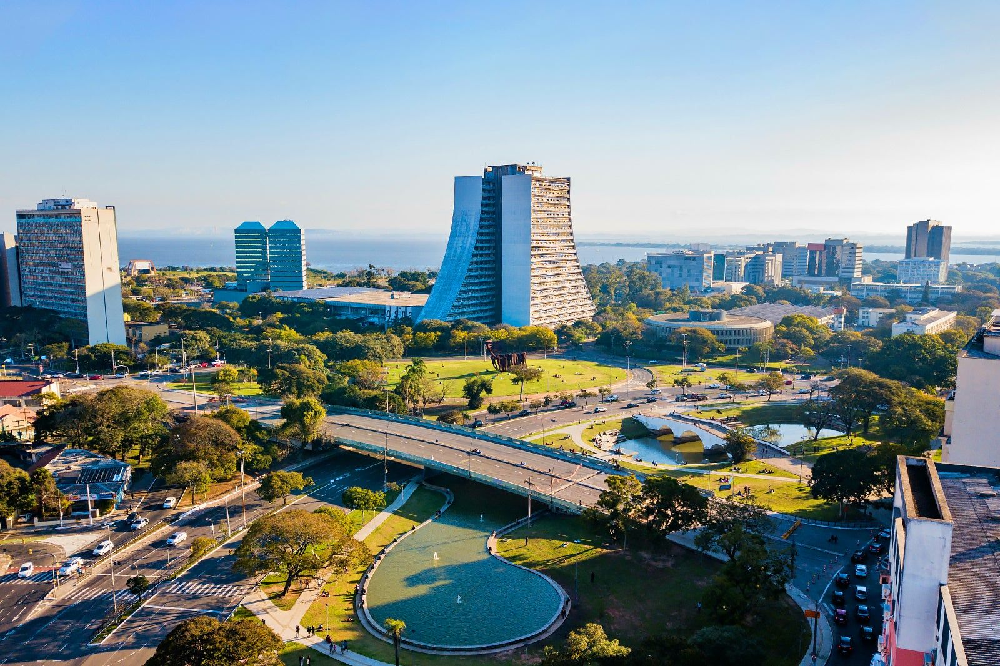
Porto Alegre - RS
Garanta a melhor experiência para o seu próximo destino.
FAZER RESERVA